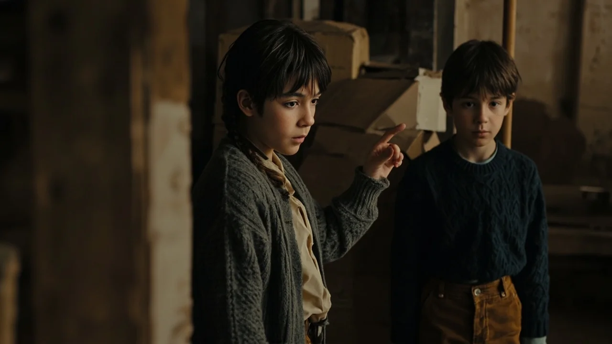
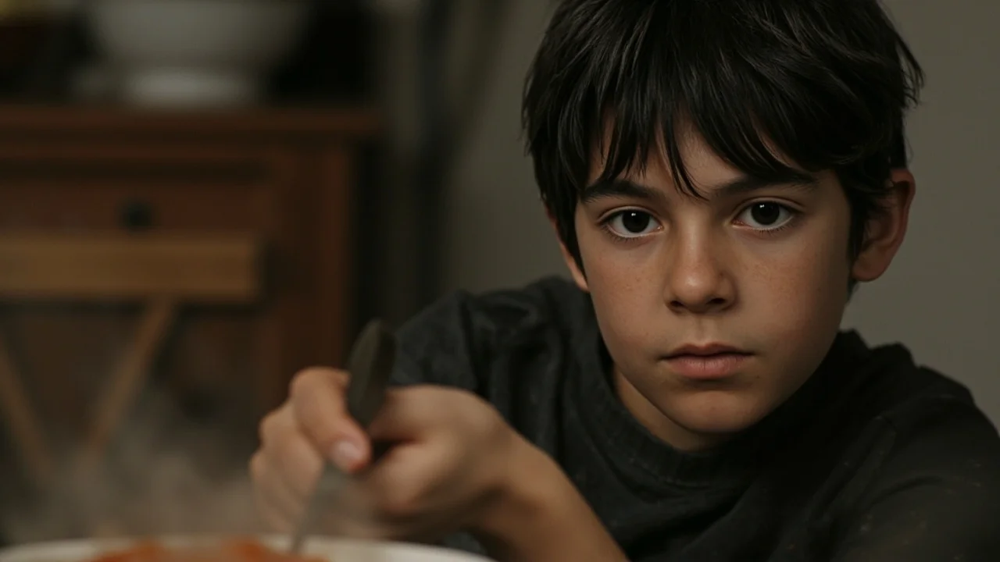
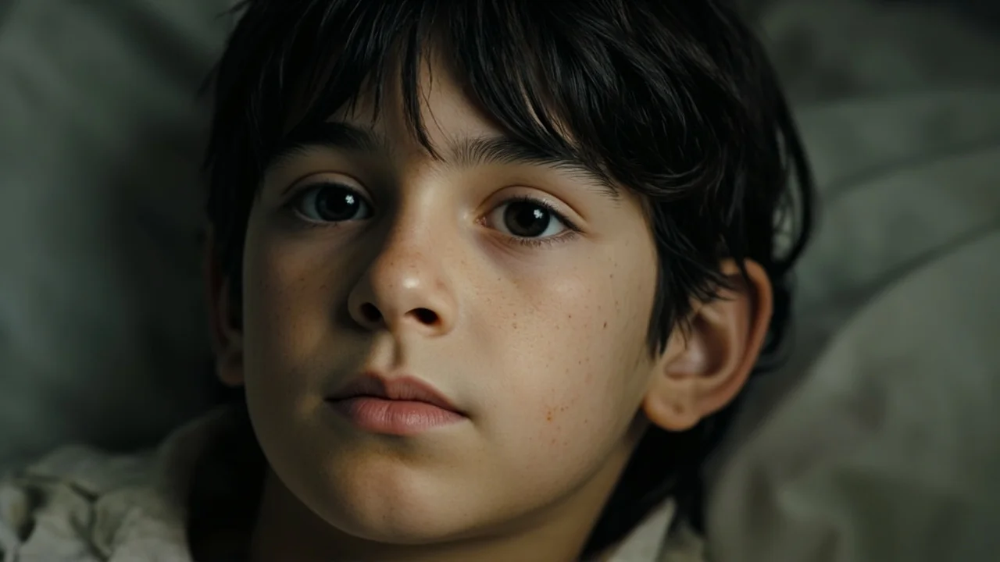
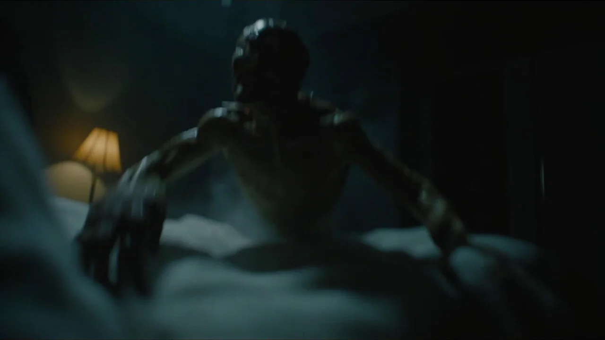
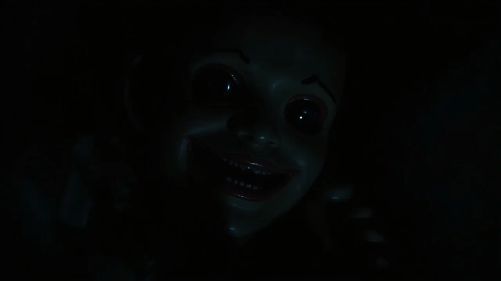

El viento bajaba encajonado entre los peñascos y silbaba contra los postigos de la casona. En el patio, la furgoneta de mudanzas aún desprendía calor. Nico arrastró una caja hasta el vestíbulo, donde su madre forcejeaba con una cerradura oxidada.
—Cuidado con las escaleras del desván, Nico —advirtió Clara, secándose la frente—. Llevan años sin pisarse y los peldaños crujen.
La buhardilla olía a serrín rancio y cera de abejas. Nico subió con una linterna pequeña cuya bombilla tintineaba a cada paso. Al fondo, junto a la chimenea ciega, una tabla de castaño bailaba bajo su pie. El clavo de forja había saltado hacía décadas. Con las yemas de los dedos apalancó el tablón hasta retirarlo. Dentro del hueco, entre virutas secas, reposaba un envoltorio de arpillera atado con cuerda encerada.
Al desatarlo apareció el muñeco. Medía cuarenta centímetros y tenía el peso denso del boj pulido. Sus extremidades se unían al torso con esferas de latón encajadas con precisión de relojero. Lo más llamativo era el rostro: mejillas redondeadas, ojos serenos de esmalte oscuro y una sonrisa tibia que transmitía una calma inmediata. En mitad del esternón, encajada en una ranura, asomaba la empuñadura de una diminuta llave de hierro forjado.
Junto a la figura descansaba un cuaderno de hule negro de su abuelo Román. En la primera hoja figuraban tres advertencias en tinta azulada:
*Nunca responder a sus preguntas después de la medianoche.* *Nunca dejarlo solo frente a un espejo.* *Nunca concederle permiso para entrar en una habitación cerrada.*
Nico sonrió ante la seriedad de las notas. Su abuelo solía inventar acertijos durante las tardes de lluvia en el pueblo. Creyendo que eran las reglas de un viejo juego, se guardó la libreta en el bolsillo, tomó el muñeco bajo el brazo y bajó a su cuarto. Lo acomodó en la balda de pino sobre el cabecero de la cama, con las manos apoyadas en las rodillas y la llave apuntando a la puerta.
La primera noche fue larga y extraña. La madera crujía enfriándose y Nico tardó en dormir, desorientado por las sombras de los sauces sobre la pared.
Despertó de madrugada con la boca seca. El reloj de la cocina dio tres campanadas apagadas. En el cuarto reinaba una penumbra azulada cuando escuchó un rumor suave que brotaba de la balda.
—Nico... —susurró la voz, con un timbre dulce y pausado—. La noche está quieta y el aire se ha vuelto pesado aquí dentro. ¿Me concedes permiso para abrir la ventana?
El chico parpadeó con pesadez. El cansancio le aplastaba los párpados. Creyó estar en uno de esos sueños brumosos en los que la realidad se deforma sin asustar.

—Bueno... sí, ábrela si quieres —murmuró entre las sábanas, dándose la vuelta.
El sueño volvió a tragarlo al instante.
Por la mañana, una corriente gélida le mordió la cara. Nico se incorporó de golpe: las dos hojas de madera de la ventana estaban abiertas de par en par y la niebla entraba a raudales. El pestillo de hierro, asegurado la noche anterior con fuerza, colgaba ladeado en el marco.
Miró a la balda. El muñeco seguía en su sitio, pero su cabeza ya no miraba al frente: el rostro tallado apuntaba al exterior, y la luz del alba arrancaba un brillo vidrioso a sus ojos de esmalte.
Durante los días siguientes, Clara apenas salió de la cocina y el despacho, abrumada por facturas y cajas sin abrir. Tenía una palidez cenicienta y la mirada extraviada.
—Esta casa agota las fuerzas, Nico —le dijo al mediodía sirviéndole un plato de sopa—. Siento los hombros como plomo. Debe de ser la humedad del sótano.
Nico no mencionó el muñeco ni el ventanal. Sentía un pudor extraño que le impedía hablar. Porque al caer la noche, la figura volvía a hablar. Pero ya no era una voz neutra: ahora imitaba el carraspeo templado y la cadencia querida de su abuelo Román.
—Hijo, las sombras rondan el pasillo y la casa está desamparada —le dijo desde la mesa de estudio, donde Nico lo había dejado sentado—. ¿Me concedes permiso para encender la palmatoria y bajar al recibidor? Quiero vigilar que nadie os perturbe.
—¿Abuelo? —preguntó Nico con un hilo de voz.
—Soy yo, muchacho. Tu abuelo que cuida la madera. Dame tu permiso para rondar el zaguán. Una palabra tuya y velaré por tu madre y por ti.
La nostalgia pesaba más que cualquier recelo.

—Tienes permiso —dijo.
Al amanecer, la palmatoria apareció consumida sobre la mesa del comedor. En el suelo de barro había marcas cuadradas, como de patas mecánicas caminando en la sombra.
Nico subió a examinar el muñeco. Al tocar sus brazos, retiró los dedos con un sobresalto: la madera conservaba una tibieza tenue, semejante a la piel bajo el sol. En los codos, las junturas de latón estaban recubiertas por un tejido rugoso y elástico que imitaba tendones humanos. Y la sonrisa tallada se había ensanchado hacia las sienes.
La cuarta noche trajo una tormenta seca. Clara se acostó temprano, quejándose de un frío punzante en los huesos y un mareo que le impedía sostenerse. Echó el cerrojo de su dormitorio para aislarse del viento.
Nico leía en la cama cuando vio al muñeco de pie sobre la alfombra. Él lo había guardado en un cajón. La figura permanecía erguida, con los brazos sueltos y la cabeza ladeada hacia el pasillo.
—Nico —sonó la voz del abuelo con un temblor lastimero que erizaba la nuca—. Tu madre arde por dentro. Una pesadilla le oprime el pecho y yo no puedo cruzar el umbral. Su puerta está atrancada con hierro. Concedeme permiso para entrar en su alcoba. Déjame pasar para cuidarla como hacía de niña.
Nico sintió un nudo en la garganta y recordó la advertencia: *Nunca concederle permiso para entrar en una habitación cerrada.*
—El abuelo escribió que no debía dejarte pasar —murmuró.
La criatura dio un paso al frente. El sonido sobre la madera fue una pisada blanda, pesada, como de planta descalza.
—Ese cuaderno lo escribí cuando no entendía nada, muchacho —insistió la voz, mezclando el tono del abuelo con un siseo agudo—. Si no me dejas pasar, la fiebre consumirá a tu madre antes del alba. Solo una palabra: entra. Dímela y sanará.
El terror a perder a su madre quebró su juicio.

—Está bien —susurró con lágrimas en los ojos—. Entra. Tienes permiso.
Un aire helado barrió el pasillo. El pestillo de Clara chasqueó al otro lado, descorriéndose como movido por dedos invisibles. La puerta se abrió despacio en la oscuridad.
A la mañana siguiente, Clara no despertó del todo. Yacía empapada en un sudor frío, con los ojos entreabiertos y un quejido débil en la garganta. El médico del pueblo subió a media tarde, auscultó sus pulmones y sacudió la cabeza, perplejo ante un colapso febril sin foco aparente.
Cuando el doctor marchó recomendando reposo urgente, Nico corrió a su cuarto y sacó el cuaderno de hule. Hojeó con manos temblorosas hasta dar con las páginas arrancadas y cosidas con hilo bramante. La caligrafía de su abuelo era un trazo desesperado:
*Cometí el error de creer que era un autómata. Es un parásito antiguo que duerme en el boj hasta que alguien le abre la puerta. No tiene fuerza propia para romper la materia: se alimenta de la voluntad prestada. Cada permiso le regala carne viva y aliento robado a la casa.*
Nico devoró los renglones con un frío mortal en el estómago:
*Si cruza el umbral de quien duerme, drenará su sangre y su memoria. Pero hay una trampa final: no puede completar la posesión por la fuerza. Para devorar el cuerpo y expulsar el alma, necesita que alguien de su misma sangre le otorgue el último permiso: la autorización de fundirse con la víctima. Si se pronuncia, la persona morirá y lo que despierte llevará su rostro, pero ya no será ella.*
Al pie de la hoja figuraba una orden desesperada en mayúsculas:
*LA LLAVE DE SU PECHO ES SU CORAZÓN Y SU GRILLETE. SI SE ALZA, GÍRALA A LA IZQUIERDA Y TIRA CON TODA TU FUERZA.*
Nico esperó en el pasillo, con la espalda contra la pared y la linterna entre las rodillas. A medianoche, las vigas vibraron con un zumbido sordo. Desde la alcoba de Clara llegó el roce de algo pesado sobre las sábanas.

Nico empujó la puerta.
Sobre el edredón, de pie junto al pecho inmóvil de Clara, se alzaba el muñeco. Sus extremidades tenían el grosor y la piel pálida de un niño enfermo, cruzada por finas venas azuladas que palpitaban. Su rostro aún conservaba los rasgos tallados, pero la carne había rellenado las mejillas y unos labios finos cubrían dientes como astillas de hueso. En el tórax, que subía y bajaba con respiración agitada, la diminuta llave de hierro forjado seguía clavada.
Al oírlo, la criatura volvió la cabeza despacio. Dos pupilas vivas y húmedas lo miraron fijamente.
—Nico... —dijo el ser. Su voz sonaba como un coro viscoso de susurros infantiles y notas roncas—. Tu madre se apaga. Su carne no resiste el frío. Concedeme permiso para unirme a ella. Déjame entrar en su cuerpo para salvarla.
El ser acarició la sien sudorosa de Clara. La mujer se convulsionó con un gemido mudo.
Nico apretó los puños.
—¡No! —gritó con toda su rabia—. ¡No te doy permiso! ¡Jamás te daré permiso!
La criatura se congeló. Su sonrisa amable se partió como un leño seco. La mandíbula cayó desencajada, revelando una sima negra desde la que brotó un rugido atroz que hizo vibrar los cristales.
El ser saltó sobre él con furia animal, estirando sus brazos para alcanzarle el cuello. Nico se arrojó hacia adelante y chocó contra la criatura, cayendo ambos sobre la alfombra. El monstruo olía a savia podrida. Sus manos gomosas le arañaron la cara mientras intentaba morderlo.
Bajo los golpes, Nico tanteó el pecho del ser hasta dar con el hierro frío de la empuñadura. Aferró la llave con ambas manos.
La criatura chilló con un alarido ensordecedor y le clavó las uñas en las muñecas. Nico trabó las piernas contra el costado del monstruo y, con un esfuerzo agónico, giró la llave hacia la izquierda.
Un crujido de engranajes quebrados sonó en el esternón del ser. Un humo fino con olor a resina quemada brotó de la ranura. Nico tiró hacia afuera con un golpe seco.

La llave salió.
El cuerpo de la criatura se arqueó en una sacudida espasmódica. La piel tibia se secó al instante, arrugándose como una hoja muerta sobre las junturas. Los músculos se endurecieron en fibras ásperas de boj astillado y los ojos vivos se apagaron, volviendo a ser dos botones de esmalte ciego.
En segundos, sobre Nico cayó un simple madero inerte, rígido y frío, con la ranura del pecho vacía. En la cama, Clara soltó un suspiro hondo y su respiración se tornó serena: la fiebre había cedido.
Temblando, Nico envolvió la figura inerte en una manta. Bajó al cobertizo por clavos de forja y un mazo, subió al desván y arrojó el bulto bajo las vigas. Martilló la tabla de castaño hasta hundir las cabezas de hierro en la madera centenaria. Luego arrojó la pequeña llave al fondo oscuro del pozo.
A finales de verano abandonaron la casona. Clara, restablecida de lo que los médicos llamaron un colapso vírico severo, alquiló un piso luminoso en la ciudad.
Pasaron cuatro meses tranquilos y la casona se puso en venta. Un sábado de noviembre, Clara regresó sola al pueblo para embalar los últimos cuadros y enseres familiares antes de firmar las escrituras.
A media tarde, el teléfono sonó en el piso de la ciudad. Nico descolgó mientras repasaba sus cuadernos de clase.
—Hola, mamá. ¿Terminaste de recoger?
Al otro lado se oyó una estática densa, como de hilos sulfatados por la niebla.
—Hola, cariño —dijo Clara, con voz lejana—. Estoy en el desván. Al mover un arcón viejo, una tabla del suelo se ha levantado sola. Los clavos estaban partidos por la mitad. Dentro he encontrado un muñeco de madera precioso, pero no tiene llave en el pecho. Iba a bajarlo, pero...
La voz de su madre se interrumpió de golpe.
—¡Mamá! —gritó Nico, poniéndose en pie—. ¡Suelta eso ahora mismo! ¡Sal de la casa!
Nadie contestó. Solo se oyó un roce seco, el chasquido de dos piezas de madera pulida frotándose contra el auricular.
Entonces, pegada al micrófono, una voz suave, aterciopelada y dulce susurró desde el fondo de la línea:
—Nico... ¿Me concedes permiso para salir?